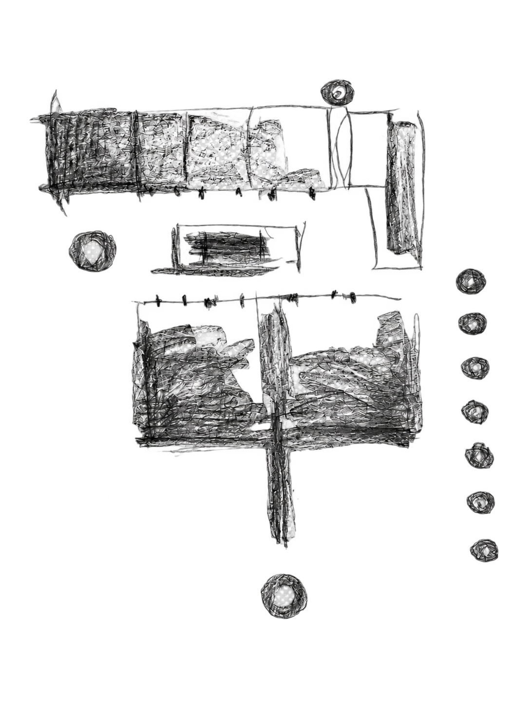

process
A record of ideas taking shape. Sketches, observations, material explorations and fragments of research come together as part of an evolving design practice. This is where thinking becomes visible, and where one idea may lead to another.
